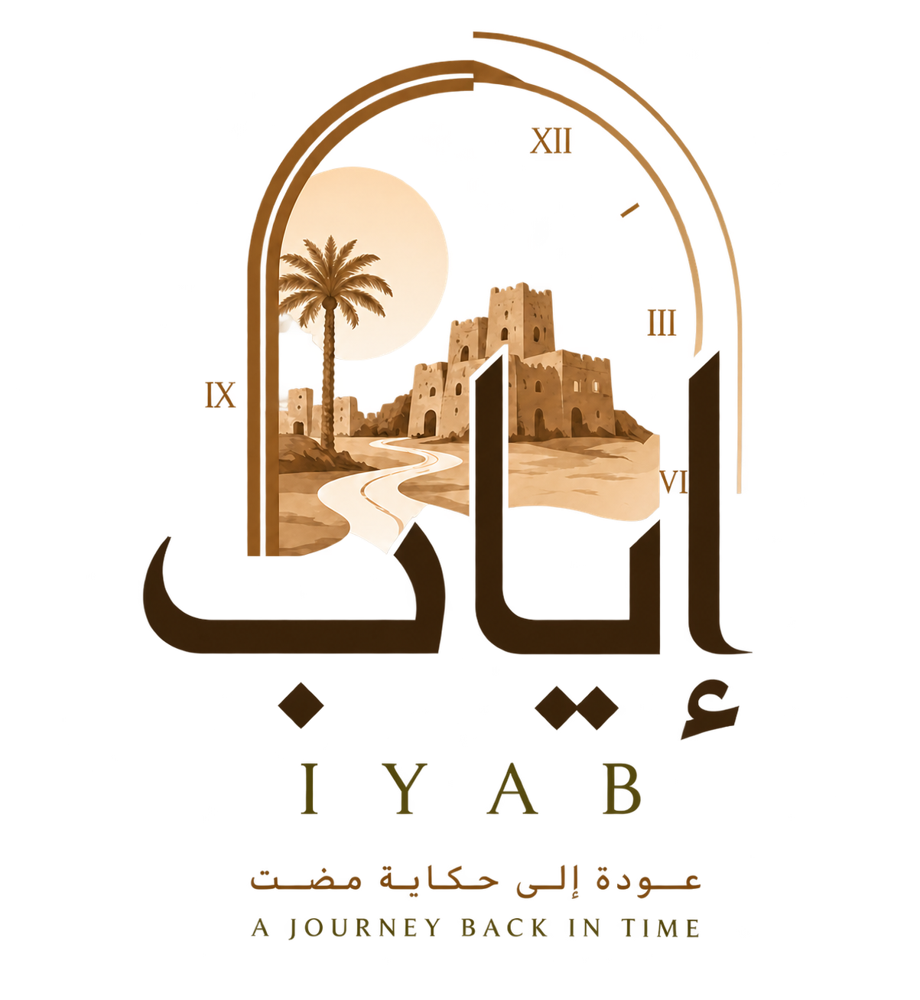

اختر المنطقة
حدد المنطقة السعودية التي ترغب في استكشافها.

عودة إلى حكاية مضتشاهد كيف تغيّر الطعام والملابس والنقل والتجارة والترفيه بين مناطق المملكة وفتراتها المختلفة.
حدد المنطقة السعودية التي ترغب في استكشافها.
انتقل إلى الفترة التي تريد معرفة تفاصيلها.
شاهد موضوعات الحياة اليومية المطابقة لاختيارك.
اضغط على إحدى النقاط لتكتشف حكاية من الحياة اليومية.
اختر الرحلة أولًا، ثم حدّد المحطة التي تريد استكشافها.
اجمع تفاصيل الحياة اليومية في رحلة واحدة مترابطة.
إياب موقع تفاعلي ينظم المحتوى الثقافي والتاريخي حسب المنطقة والفترة الزمنية وموضوع الحياة اليومية، ليجعل استكشاف التراث السعودي أوضح وأكثر ترابطًا.